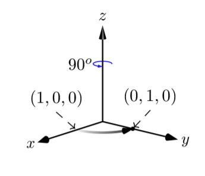
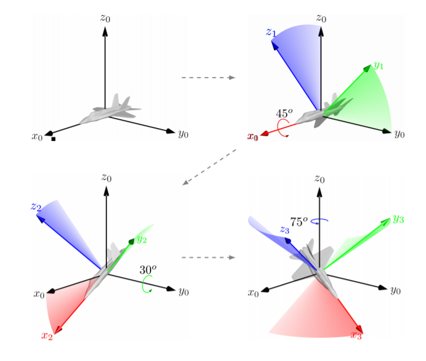
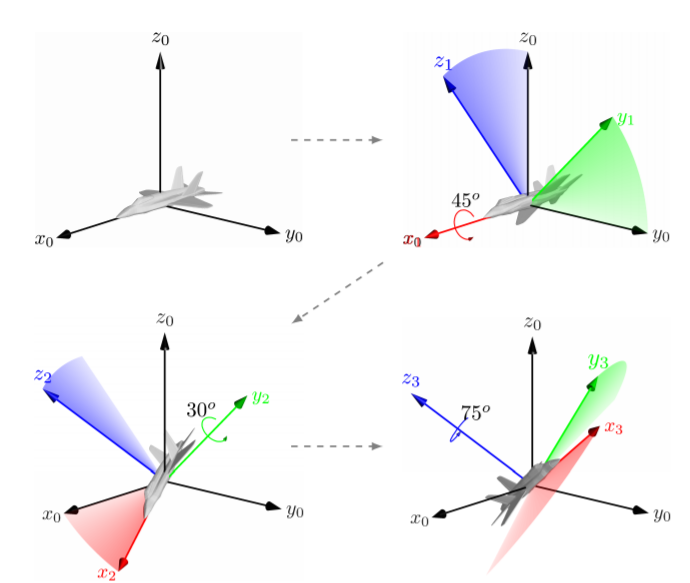

Rotational Matrix
Until now we have represented spatial coordinates as ordered triples: (x, y, z). Equivalently, we may think of points in space as three-dimensional column vectors:
. This view is convenient because certain spatial transformations may be accomplished through matrix operations. In particular,
any rotation can be encoded as a 3 × 3 rotation matrix. Pre-multiplying the matrix by a point will have the effect of performing the desired rotation around the origin.
The following three matrices correspond to rotations around the x, y, z axes respectively:

Figure shows the example of rotating the point
by
around the z-axis.
It is possible to represent any orienation as a product of three rotation matrices around the x, y and z axes. It is straightforward to convert from an Euler angle representation to the corresponding rotation matrix. For static rotations,
the three elementary rotation matrices must be multiplied in the order that the rotations should be applied.

This means that the rotation matrix that corresponds to the Euler angle rotations illustrated in above Figure would be:

For Euler angles represented using relative rotations, the order is reversed. The rotation matrix corresponding to above Figure would be:
The main advantage of rotation matrices is that they provide a convenient mechasism for composing rotations and for applying rotations to a point. The downside is that this is a highly redundant represenatation. A 3 × 3 rotation matrix
contains 9 values, but as we saw three numbers are sufficient to represent any orientation in a three dimensional space.
 Previous
Previous